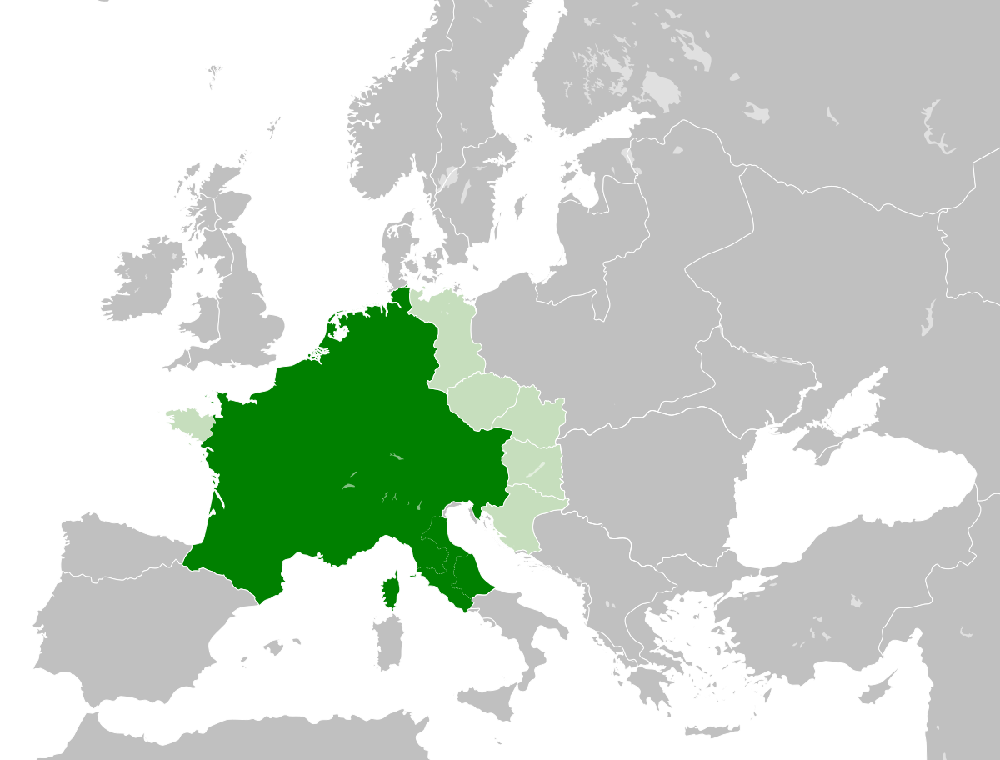

Carolingian Empire

| Capital: | Tournai | Population: | 9.600.000 Mio |
|---|---|---|---|
| Current Leader: | Charlemagne | Land Area: | 1.200.000 km² |
| Type of Government: | Monarchy | Currency: | the Denier |
After the fall of western Rome, the Franks rose in the area
of future France and Germany. Their Leader, Charlemagne, was
croned Emperor. Now, both the Francs and the Byzantinians claim to
be
the rightful succesor of the Roman Empire.
The Carolingian Empire itself is at its territorial peak, and
Charlemagne, of course, wants to ensure its safety.
However,
since 810 he suffers
from illness and because of that, he has to pass on the throne.
His son Ludwig shall run the country.
Source: Francia